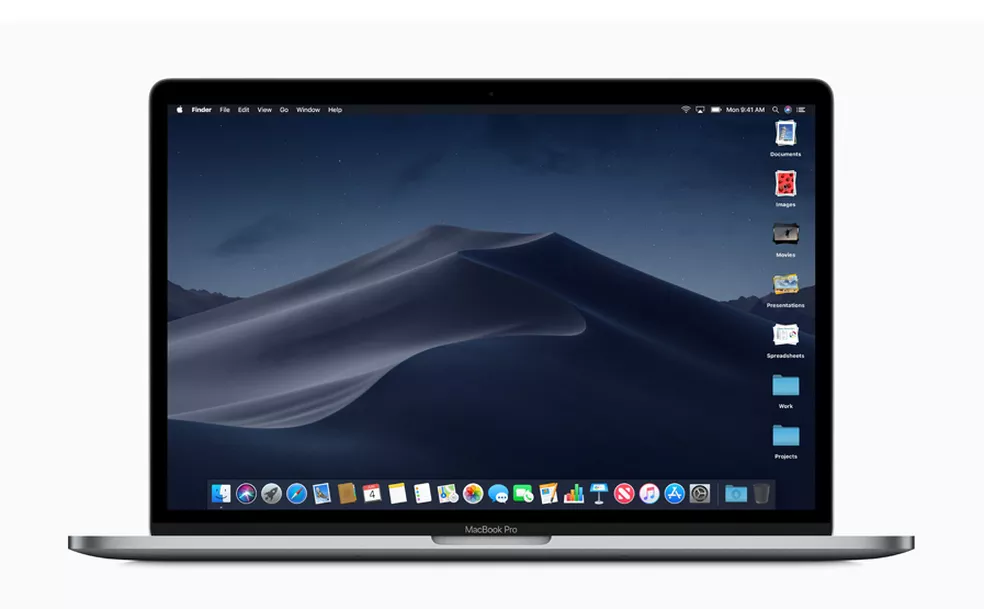
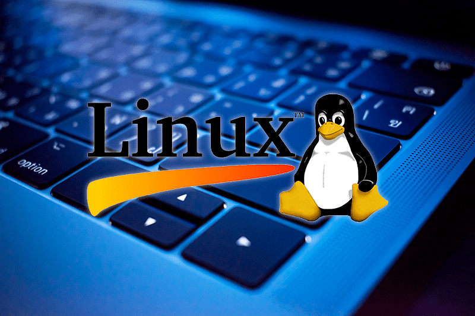

SISTEMAS OPERACIONAIS
WINDOWS, LINUX OU MACOS?
Como escolher um Sistema Operacional (SO)
Não podemos contestar que a informática é um requisito fundamental para os dias atuais. Através dela conseguimos mais organização e agilidade na realização das atividades. Com base nisso, preparamos algumas informações que podem te ajudar com os desafios que irá enfrentar. Te orientar nessa tarefa tão importante que é a escolha do sistema operacional que você poderá utilizar, também pode ser um requisito fundamental para ingressar com sucesso no ambiente tecnológico. O computador é uma máquina capaz de manipular variados tipos de dados. Tudo isso acontece por meio de um conjunto de elementos interligados, divididos entre duas partes: hardware e software.
Hardware: é a parte física e palpável do computador.
Software: é a parte lógica e inteligente do computador, representada pelos programas.
A SEGUIR, CONFIRA MAIS DETALHES SOBRE ALGUNS HARDWARES DO COMPUTADOR:
PLACA-MÃE
A placa-mãe, também conhecida como mainboard, é a peça responsável por conectar todas as outras partes do computador.
PROCESSADOR
O processador conhecido pela sigla CPU (unidade central de processamento), é o cérebro do computador. Ele é responsável por executar as instruções dos programas, efetuar cálculos matemáticos e controlar as atividades internas, tomando decisões.
HD e SSD
Também já foi conhecido como Winchester, O HD (Hard Disc) tem, como função principal, armazenar os programas e os arquivos do usuário de forma permanente. É uma memória do tipo magnética e não volátil, e sua velocidade é medida em RPM (rotações por minuto). Nele, as informações são gravadas e lidas de forma mecânica. O SSD (unidade de estado sólido), não é um disco magnético, mas sim, constituído por uma memória flash (chips). Ele é mais rápido, resistente e mais silencioso do que o HD, além de consumir menos energia elétrica.
MEMÓRIA RAM
A memória principal RAM (memória de acesso aleatório) trabalha diretamente com o processador, e é responsável por armazenar as instruções e os dados dos programas no momento de suas execuções, por isso, é temporária. A memória RAM influencia na velocidade do computador e, por isso, pode ter sua capacidade alterada.
Sistema Operacional Windows

O sistema operacional é o programa responsável por gerenciar os recursos do seu computador. Alguns exemplos de sistemas operacionais conhecidos são Windows, Linux e MacOS. E é esse o componente que vamos conhecer um pouco mais. O Windows é um sistema operacional desenvolvido pela Microsoft Corporation e lançado pela primeira vez em 20 de novembro de 1985. Foi idealizado por Bill Gates e Paul Allen, co-fundadores da Microsoft. Desde então, passou por várias versões e atualizações, cada uma trazendo novos recursos, melhorias de desempenho e usabilidade.
A ideia original por trás do Windows era oferecer uma interface gráfica de usuário para os computadores pessoais, tornando-os mais acessíveis e fáceis de usar. Antes do Windows, os sistemas operacionais eram principalmente baseados em texto e comandos, o que tornava a interação com o computador mais complexa para usuários comuns. Com o Windows, as pessoas podiam interagir usando ícones, menus e janelas, tornando a experiência mais intuitiva.
A função principal do Windows é fornecer um ambiente de execução para aplicativos de software. Ele gerencia recursos de hardware, como memória, processadores e dispositivos de entrada/saída, permitindo que os programas sejam executados de maneira eficiente. Além disso, o Windows oferece uma ampla gama de aplicativos integrados, como navegadores, programas de produtividade, reprodutores de mídia e muito mais.
É importante notar que o Windows é um dos sistemas operacionais mais populares do mundo. No entanto, a participação de mercado varia de acordo com diferentes regiões e contextos. Em ambientes de trabalho, o Windows é amplamente adotado em muitas empresas e organizações devido à sua compatibilidade com uma variedade de softwares empresariais e ferramentas de produtividade. Em casa, muitos usuários também preferem o Windows devido à sua familiaridade e disponibilidade de jogos e aplicativos.
Embora não haja números exatos que indiquem a porcentagem exata da população mundial que utiliza o Windows, estudos e análises de mercado sugerem que uma grande parcela dos computadores pessoais em todo o mundo roda alguma versão do Windows, sendo ele o sistema operacional mais usado no mundo.
Windows teve um papel significativo na popularização dos computadores pessoais ao longo das décadas, fornecendo uma interface amigável para os usuários e servindo como plataforma para uma variedade de aplicativos e tarefas. Sua presença é notável em muitos setores e continua a ser uma escolha comum para milhões de pessoas ao redor do mundo.
mais informações
Sistema Operacional MacOS

O macOS é o sistema operacional desenvolvido pela Apple Inc. para seus computadores Macintosh. Anteriormente conhecido como Mac OS X e OS X, o macOS é reconhecido por sua estabilidade, design elegante e integração com hardware de qualidade da Apple. A história do sistema remonta aos primeiros dias dos computadores Macintosh no início dos anos 80.
O sistema operacional dos primeiros Macs era conhecido como System Software, evoluindo posteriormente para o Mac OS (Macintosh Operating System). No entanto, a grande mudança aconteceu em 2001, quando a Apple lançou o Mac OS X, trazendo um núcleo Unix-like chamado Darwin e uma nova interface gráfica conhecida como Aqua. Desde então, o sistema passou por várias versões, sempre trazendo melhorias de desempenho, recursos inovadores e integração contínua com o hardware da Apple.
A principal função do macOS é oferecer um ambiente operacional intuitivo e funcional para os usuários de Macs. Assim como outros sistemas operacionais, o macOS gerencia recursos de hardware, fornece uma interface gráfica para interação do usuário e suporta uma ampla gama de aplicativos.
O macOS é conhecido por seu design elegante, simplicidade de uso e integração perfeita com outros produtos da Apple, como iPhones, iPads e Apple Watch. Ele também oferece uma série de aplicativos embutidos, incluindo Safari (navegador da web), Mail (cliente de e-mail), iTunes (gerenciador de mídia) e muitos outros, criando um ecossistema coeso e funcional para os usuários da Apple.
Quanto à participação global do macOS, sua presença no mercado de computadores pessoais é menor em comparação com o Windows, mas significativa em relação a um segmento específico de usuários. De acordo com dados de pesquisas de mercado, a participação do macOS no mercado de desktops e laptops é relativamente menor em comparação com o Windows, mas mantém uma base sólida de usuários leais.
A Apple historicamente tem direcionado seus produtos para um mercado mais premium, o que pode limitar sua penetração em termos de participação de mercado global. No entanto, entre determinados grupos demográficos, como profissionais criativos, designers, desenvolvedores e entusiastas da tecnologia, o macOS é altamente valorizado pela sua estabilidade, segurança e integração com outros dispositivos Apple.
Contudo, o macOS é um sistema operacional reconhecido pela sua qualidade, design e integração com o hardware da Apple. Embora não tenha a mesma participação de mercado que o Windows, possui uma base de usuários leais e continua sendo uma escolha popular para muitos que buscam um sistema operacional confiável e integrado.
mais informações
Sistema Operacional Linux

O Linux é um sistema operacional de código aberto, conhecido pela sua estabilidade, segurança e flexibilidade. Diferentemente do Windows e do macOS, o Linux é baseado no kernel Linux, desenvolvido originalmente por Linus Torvalds em 1991. O termo "Linux" refere-se ao kernel em si, enquanto as distribuições do Linux, como Ubuntu, Fedora, Debian e CentOS, combinam o kernel Linux com software adicional para criar um sistema operacional completo.
A história do Linux começou com Linus Torvalds, um estudante finlandês, que criou o kernel como um projeto pessoal, inspirado no sistema operacional Unix. Ele compartilhou seu trabalho com a comunidade de desenvolvedores, adotando o modelo de desenvolvimento colaborativo e aberto. Isso permitiu que programadores ao redor do mundo contribuíssem para o desenvolvimento do kernel, resultando em um sistema operacional robusto, flexível e de alta qualidade.
A principal função do Linux é semelhante à de outros sistemas operacionais: gerenciar recursos de hardware, fornecer uma interface para os usuários interagirem com o computador e executar aplicativos. No entanto, uma das características distintivas do Linux é sua versatilidade. É amplamente utilizado em servidores, dispositivos embarcados, supercomputadores, smartphones (em algumas formas, como o Android) e é uma escolha popular para desenvolvedores, entusiastas de tecnologia e empresas.
Quanto à participação global do Linux, é mais desafiador estabelecer uma porcentagem exata de usuários devido à sua natureza diversificada e distribuída. O Linux é amplamente utilizado em servidores, data centers e dispositivos IoT (Internet das Coisas). Enquanto no mercado de desktops, embora tenha uma base de usuários significativa, a sua fatia é menor em comparação com o Windows e o macOS.
Em termos de uso doméstico, a participação do Linux é menor, principalmente devido à predominância do Windows e do macOS. No entanto, sua popularidade tem crescido gradualmente, especialmente entre usuários mais técnicos, entusiastas de software livre e comunidades de desenvolvimento.
De maneira geral, o Linux é um sistema operacional poderoso, altamente customizável e confiável, com uma comunidade de usuários e desenvolvedores ativa e apaixonada. Embora sua adoção em desktops possa não ser tão ampla quanto outros sistemas operacionais comerciais, sua presença é significativa em muitos outros domínios tecnológicos.
mais informações
Outros Sistemas Operacionais

Existem muitos outros sistemas operacionais baseados em Linux além dos principais mencionados
anteriormente. O Linux é um sistema aberto, o que significa que qualquer pessoa pode fazer
alterações, então existem centenas de sistemas baseados em Linux. Mas, temos alguns exemplos
que poderiam lhe surpreender, então nos acompanhe nessa jornada.
Tails (The Amnesic Incognito Live System): É uma distribuição Linux focada em privacidade e
anonimato. Ele é projetado para ser executado a partir de um USB ou DVD, então você cria
todo o sistema em um pendrive ou até mesmo no CD e roda em modo "live", não deixando rastros
no sistema host. O objetivo é manter a privacidade, anonimato e segurança do utilizador e
burlar a censura de conteúdo em países. Ele se conecta à Internet exclusivamente pela rede
anônima.
Solaris: Desenvolvido pela Oracle Corporation, o Solaris é um sistema operacional Unix usado
principalmente em servidores. Ele oferece suporte a uma ampla variedade de arquiteturas de
hardware, incluindo sistemas baseados em processadores SPARC e x86. Embora seja um sistema
interessante para utilizar em servidores, foi descontinuado em 2017, com o suporte estendido
até 2031.
AIX (Advanced Interactive eXecutive): Desenvolvido pela IBM, o AIX é projetado para ser
executado em servidores IBM Power Systems, que incluem mainframes e servidores de alto
desempenho. Ele fornece uma base sólida para aplicações empresariais e oferece recursos
avançados para suportar ambientes de computação de alto desempenho.
Kali Linux: Resolvi trazer o Kali, pois é um sistema muito interessante e todos deveriam
conhecer. Um sistema operacional de código aberto baseado no Debian, projetado para testes
de penetração e segurança cibernética. É amplamente utilizado por profissionais de segurança
e hackers éticos. Ao ser instalado, já vem com diversos aplicativos voltados para hackers
para você utilizar. É voltado principalmente para auditoria e segurança de computadores em
geral.
Chrome OS: Desenvolvido pelo Google, projetado principalmente para dispositivos como
Chromebooks, Chromeboxes e Chromebits. Ele é baseado no navegador Google Chrome e possui uma
interface de usuário simplificada centrada na web. São populares em ambientes educacionais e
empresariais devido à sua simplicidade, segurança e custo geralmente mais baixo em
comparação com laptops tradicionais.
Esses são apenas alguns exemplos de sistemas operacionais que você poderia não conhecer.
Existem muitos outros que atendem a diferentes necessidades e preferências dos usuários. Se
você gosta de explorar novas possibilidades, vale a pena conferir esses sistemas incríveis!
mais informações